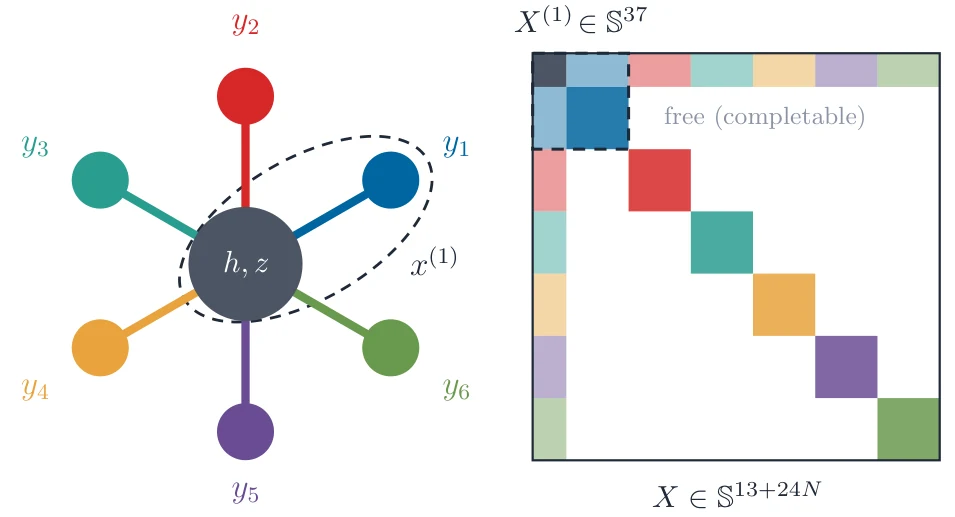
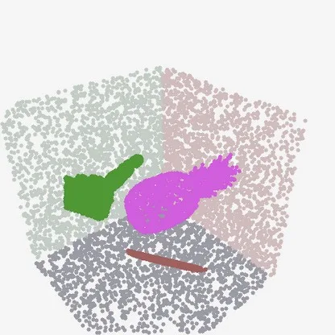

新论文 · 日期 2026-10-26 · score 17 · S层 · Robust State Estimation / Uncertainty · cs.CV, cs.RO, math.OC
内容级别：完整单篇海报
作者：Bang-Shien Chen, Caitrin E. Eaton, David M. Rosen
评分 17/10
PnP可认证求解器半正定松弛全局最优chordal 稀疏商环约简极大似然估计SO(3)位姿估计
一句话工作总结：核心是把“有理重投影 + SO(3) 约束”换成“带星形稀疏的 QCQP + 精确 SDP”：用 v=θ−π(z) 把有理项移到约束里，再把基提升到 [1,z,v⊗z] 让模型约束变线性、目标变 ‖y‖²，并用只涉及单点子变量的冗余约束保住稀疏；最后靠 chordal 分解（N=50 时比稠密 SDP 快约 65×）和商环约简（再快 12–18%）把问题压到可在笔记本上求解。…
从 3D-2D 对应估计相机位姿（Perspective-n-Point）是视觉里最基础的问题之一，但现有方法要么只解最小问题，要么把目标换成一个更容易的误差。PnP* 主张直接优化 PnP 的真正极大似然目标（重投影误差），并给出第一个既实用、又在多项式时间内返回可认证全局最优解的求解器。做法是把有理目标改写成仅引入必要辅助变量的二次约束二次规划，加上保持稀疏结构的冗余约束，得到半正定松弛；作者证明该松弛在中等噪…
Estimating a camera pose from 3D-2D correspondences - Perspective-n-Point - is one of the most fundamental problems in computer vision. Existing methods either solve a minimal problem or replace the objective…

新论文 · 日期 2026-10-26 · score 15 · A层 · Embodied Navigation / VLN / Spatial Reasoning · cs.RO, cs.CV
内容级别：半海报
作者：Jiawei Chen, Yinxi Wang, Zihan Yang, Meijun Gao, Yaowei Liu, Shuming Zhang, Zecheng Li, Xiangju Mi, Yuxuan Liu, Runzhong Huang, Tianlin Li, Xun Zhang, Zhengyang Wang, Xu Miao, Tong Yang
评分 15/10
导航基础模型自构建表征层间注意力JEPA隐式思维链世界模型VLN点目标导航Qwen3-VL
一句话工作总结：三个冻结基础模型（DINOv3 语义、Depth Anything 3 几何、OpenD4RT 动态）的全深度层特征经轻量 adapter 对齐后，由三层 Representation Residuals 用 learnable query 做逐层 softmax 加权求和，再经残差自注意力聚合，每视图输出一个 [CLS]。语言主干是 Qwen3-VL-4B，动作前自回归生成…
导航策略应该作用在什么样的视觉表征上？表征学习的核心主张是“任务自身的误差应当塑造表征”，但建立在视觉基础模型上的导航策略大多把这件事交给编码器的预训练目标。RepresentNav 提出“自构建表征空间”：用策略自己的目标，从多个视觉基础模型的内部结构里构造表征。它用 Representation Residuals（一个三层 transformer，注意跨三个互补基础模型的全深度层特征）搭出这个空间；并在同一空…
What visual representation should a navigation policy act on? Navigation policies built on vision foundation models largely leave representation design to the encoders' pretraining objectives. We present Repre…

新论文 · 日期 2026-10-26 · score 12 · A层 · Robotic Foundation Models / VLA · cs.RO, cs.CV
内容级别：半海报
作者：Chubin Zhang, Changyuan Wang, Yirui Wang, Ao Li, Shilin Ma, Yue Su, Cai Zhou, Xiuwei Xu, Tianle Zhang, Yansong Tang
评分 12/10
VLA第一视角数据标签噪声可靠度加权特权未来蒸馏流匹配RoboCasa灵巧操作
一句话工作总结：骨架是 Qwen3.5 系 4B 主干 + 耦合的视觉/动作专家，动作专家输出 30 步 chunk（130 维规范动作空间），视觉目标用冻结的 DINOv3。两个机制互补：源级可靠度 q_d 决定腐蚀强度与损失权重；EMA 教师从“当前帧 + 干净未来”学到的表征蒸馏进“当前帧 + 被腐蚀未来”的学生层。RoboCasa 100 demo/task 下 66.0% vs D…
扩展策略学习需要广覆盖的经验与可靠监督：机器人示教提供高质量轨迹但采集昂贵，第一视角视频扩大任务与环境覆盖，却在动作重建与重定向时引入噪声标签。EgoForesight 提出一个视觉-语言-动作框架，同时利用两类数据：用“可靠度条件腐蚀”按来源可靠度分配动作监督强度、用可靠度加权回归调节各源贡献；再用“特权未来表征蒸馏”从示教结果中取监督——一个 EMA 教师看当前场景与干净未来帧（充当条件逆动力学模型），把深层表…
Scaling policy learning requires broad experience and reliable supervision. Robot demonstrations provide high-quality trajectory supervision but are costly to collect. Egocentric videos broaden task and enviro…

新论文 · 日期 2026-10-26 · score 11 · A层 · Robotic Foundation Models / VLA · cs.RO, cs.CV
内容级别：半海报
作者：Tianling Xu, Weijie Wan, Honghao Su, Kailun Su, Junyuan Tang, Huichi Zhou, Haozheng Zhang, Qi Xiong, Ping Luo, Wenbo Ding, Tianxing Chen, Yue Chen
评分 11/10
real-to-simagentic 系统数字孪生相机锚定坐标系验证驱动精化轨迹回放DROIDIsaac Sim
一句话工作总结：一个 router agent 在固定构建图（场景准备→相机标定→支撑面拟合→物体构建→布局→机器人对齐→轨迹回放）上选择合法动作，四个专家 agent 作为可调用工具；共享世界状态记录场景、物体、空间关系与验证反馈，验证不通过就按带类型的失败回滚并重建下游。静态场景用 Gaussian + 碰撞几何，物体用 Meshy/Articraft 生成可编辑资产，相机用 DINOv…
现有机器人仿真训练环境往往需要大量人工搭建场景与指定任务，限制了训练规模与数据多样性；而野外机器人示教本身提供多样真实的交互观测。要把示教变成仿真，既要高保真视觉重建，又要物理一致的交互。WorldMirror 提出一个 agentic real-to-sim 框架：把 real-to-sim 构建表述为“可执行世界程序”的迭代精化——一个编码 agent 分解场景、规划重建步骤、编排专用图像与 3D 生成工具，并…
Existing approaches for robot learning in simulation often require substantial manual effort to construct scenes and specify tasks, limiting training scalability and data diversity. Meanwhile, in-the-wild robo…

新论文 · 日期 2026-10-26 · score 9 · A层 · Embodied Navigation / VLN / Spatial Reasoning · cs.CV, cs.RO
内容级别：半海报
作者：Jiaxi Liu, Keshu Wu, Weizhe Tang, Bofeng Cao, Sikai Chen, Xiaopeng Li, Steven T. Parker, Bin Ran
评分 9/10
施工区临时交通管制候选路径池VLM 偏好排序rank fusionMUTCD 谓词有界干预误差归因
一句话工作总结：关键是把“没有好候选”和“选错候选”分开：双分支（free-space / TTC-conditioned）各采 60 个终点解码 15 点路径，共 120 条候选不做剪枝；VLM 先读车道状态与危险侧、再给通行决定与自身轨迹，该轨迹只作为排序偏好；最后用 MUTCD 派生的图像谓词做有界干预（分数与位移都有界），保证任何情况下都有可行输出。误差归因显示 53% 的排序器误差…
临时交通管制会把车辆改道穿过施工区，自动驾驶必须把“看到的设施”与“一条连续可通行路径”连起来。几何预测器能给出若干可行路径，但选出与临时管制一致的那条很难。SAGE 提出 read–decide–execute–check 框架，在共享候选空间里把路径构造、路径偏好与控制合规分开：用视觉语言模型的轨迹作为对完整几何候选的偏好，角色解耦的生成器构造候选，rank fusion 把几何分数与 VLM 轨迹一致性融合；…
Temporary traffic control redirects vehicles through work zones, requiring automated vehicles to connect an interpretation of the visible devices to a continuous passing path. Geometric predictors can provide…

新论文 · 日期 2026-10-26 · score 6 · B层 · Neural Rendering / 3DGS / NeRF · cs.CV, cs.GR, cs.LG
内容级别：简报式摘要
作者：Sarah Zhang, Zhiyang Dou, Minghao Guo, Benjamin Tod Jones, Wojciech Matusik
评分 6/10
前馈渲染全局光照物体中心表示形状因子注意力神经渲染
一句话工作总结：把“按三角面 token 化”换成“按物体 + 32 个表面片 token 化”，注意力长度与网格分辨率解耦；用 SE(3) 不变的内积把距离与朝向写进注意力权重，避免显式 O(N²) 形状因子；主可见性用深度测试的点 splat 引导相机射线对场景 token 做 cross-attention。600k 步 32.2 dB，比 RenderFormer 高 3.3 dB、…
前馈神经渲染器无需逐场景优化或运行时光线追踪就能合成新场景的全局光照，但现有 transformer 渲染器把每个三角面token 化，自注意力随网格分辨率平方增长。宏观辐射传输取决于表面几何与物体排布，而不是具体网格离散，更细的细分只增加 token 数、不改变传输物理。RADIANT 因此提出以物体为中心的表示：每个物体只用 32 个表面片 token，把注意力长度与多边形数解耦；单网络里由 inter-obj…
Feed-forward neural renderers synthesize global illumination across novel 3D scenes without per-scene optimization or runtime ray tracing. Existing transformer-based renderers tokenize individual triangles, so…